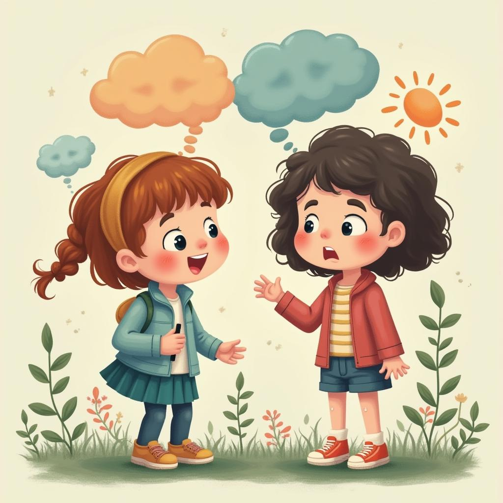
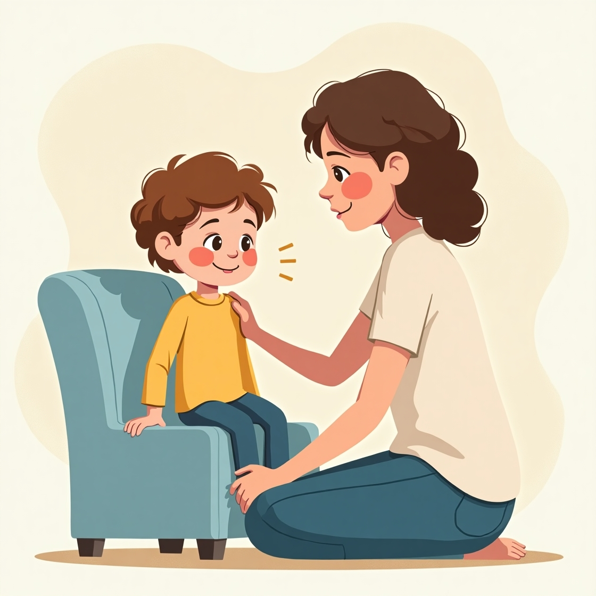

Apoyar la salud mental y el bienestar de los adolescentes es fundamental para su desarrollo durante la transición de la infancia a la adultez. Esta transición sienta las bases para una vida sana y productiva.
¿Qué es la Salud Mental Infantil?
(Gautam et al., 2024) la salud mental es nuestro bienestar psicológico, emocional y social. Es el potencial de nuestra mente para crecer, superar desafíos y explorar oportunidades. Puede variar día a día, y cuando es buena, nos sentimos flexible, es decir, capaces de adaptarnos a los altibajos de nuestra vida. Cuidarla es fundamental, ya que todos la experimentamos de manera diferente.
Dato importante
¿Sabías que la mitad de las personas que padecen algún problema de salud mental empiezan a mostrar síntomas antes de los 14 años? Si sientes que algo no está bien, no estás solo.
¿Qué causa los problemas de salud mental?
(Huziej, 2025) no siempre podemos controlar nuestra salud mental, como no podemos controlar el clima, pero si estamos luchando podemos elegir cómo lidiar con ello.
Algunas cosas comunes que pueden desencadenar problemas de salud mental incluyen:
- Acoso o abuso
- Traumas
- Problemas en casa o en la escuela
- Estrés o presión
- Baja autoestima
Información Clave
Puede que te sientas identificado con algunas cosas de esta lista, o puede que no reconozcas tu experiencia en absoluto, pero no pasa nada. Todos somos distintos y la vida nos afecta a cada uno de forma diferente. A veces no hay una razón obvia por la que tengamos problemas de salud mental. Esto no significa que tu experiencia no cuente. Independientemente de la razón por la que estés atravesando un momento difícil, no es tu culpa recuerda las cosas pueden mejorar.
¿Cómo saber cuándo necesito ayuda? Señales
(Depression In Children: 5-8 Years, 2024) todos enfrentamos dificultades con nuestra salud mental en algún momento de nuestras vidas, al igual que todos nos enfermamos de vez en cuando. Si te preocupa cómo piensas, sientes o actúas, confía en tu instinto: tú eres quien mejor sabe si algo no está bien contigo mismo. A continuación, te presentamos algunas señales a las que debes prestar atención:
Cómo piensas
- Tener pensamientos o comportamientos obsesivos, como sentir que debes hacer algo todo el tiempo o que algo malo ocurrirá.
- Experimentar pesadillas, o pensamientos inadecuado.
- Obsesionarte con tu apariencia
Cómo te sientes
- Sentirte triste la mayor parte del tiempo o todo el tiempo.
- Sentir enojo constante y estar ansioso la mayor parte del tiempo.
- Sentir un entumecimiento emocional, como si no sintieras nada en absoluto.
Cómo actúas
- Experimentar altibajos extremos o cambios de humor.
- Aislarte de amigos y familiares.
- Cambiar tus hábitos alimenticios
Alternativa
Si reconoces algunas de estas señales, es importante que busques ayuda. Aunque esto no necesariamente indique un problema de salud mental, recibir apoyo puede ayudarte a sentirte mejor.